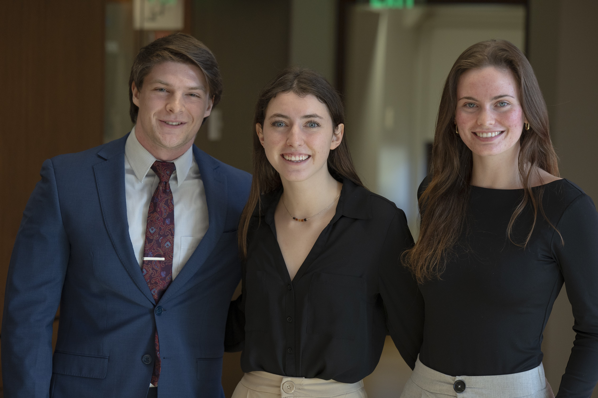
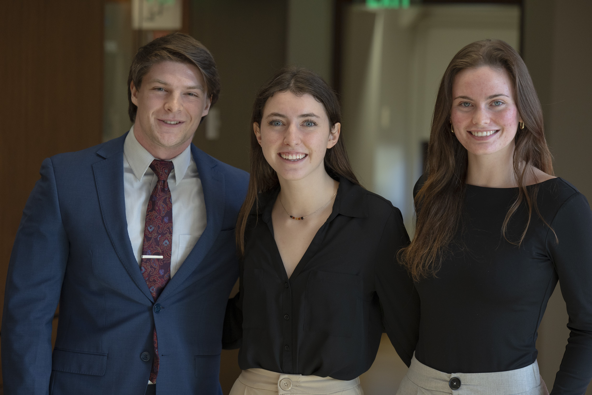
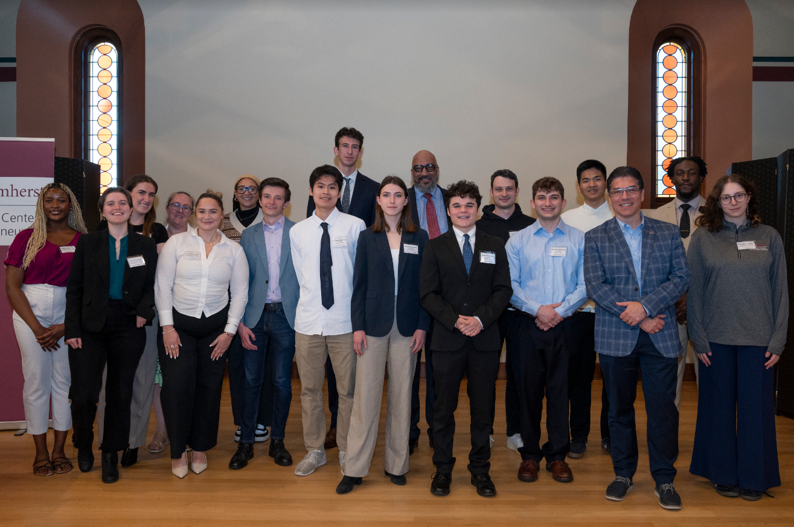
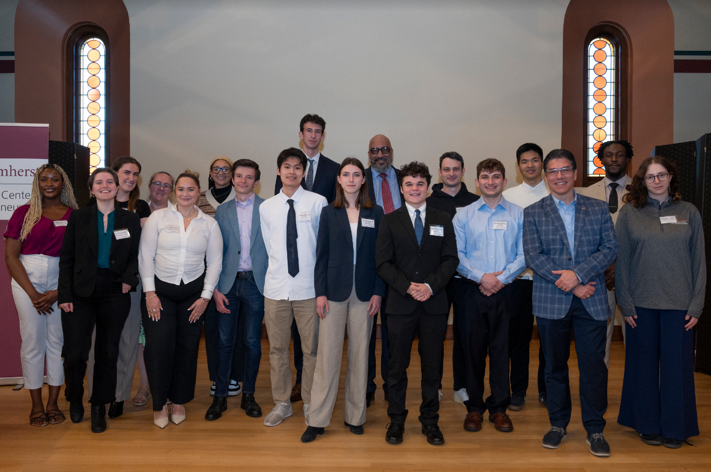
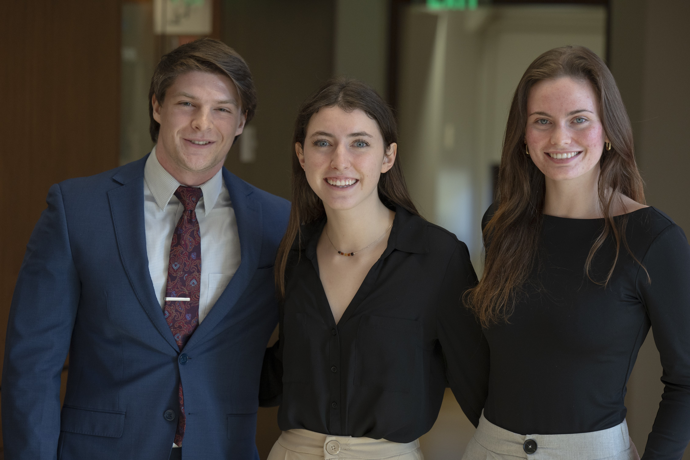
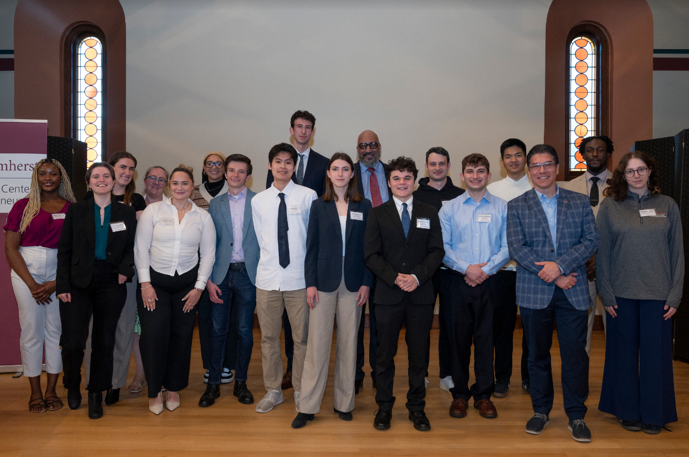

 

Photo Credits: Jon Crispin


I recently won second place and $21,000 in funding at the 2024 UMass Amherst Innovation Challenge for my app, Peony Garden. Among 65 teams who applied and the 24 who pitched in the preliminary rounds, we were thrilled to advance to the final round!
I partnered with BUILD UMass members Tung Le and Paul Davis to bring this idea to life. I lead the business plan and application process, Tung created the prototype and Paul attend the 2024 Game Developers Confrence to gain knowledge and feedback for our app.
To apply for the innovation challenge, I prepared and submitted our executive summary and business model canvas. During our pitch, we addressed the barriers to traditional gardening, presented our value proposition, showcased our design and prototype, analyzed our total addressable market, outlined our revenue model, discussed costs and profits, and highlighted why our team is well-prepared to develop this app.
The Hult Prize is the larget student social entrepreneurship competition in the world. Students compete to solve a social issue in alignment with the United Nation's 2030 Sustainable Development Goals. The first place winner at UMass would go on to compete in the Massachusetts Finals then the United States Finals to then compete globally for a million dollars in funding.
Our team won second place in the UMass Amherst competition for our web extension, LEAP. Collaborating with teammates Hannah Lee and Ian McCarron, we dove into researching the textile waste crisis and created the idea of developing a web extension to shop for specific items of used clothing. We then aligned the project with the UN's Sustainable Development Goals, designing it using Figma, and outlining various aspects including our target market, marketing plan, partnerships, financial roadmap, and projected impacts.
I competed in the Tech Challenge on November 6th with the same student wellness hub product from ULaunch. The Tech Challenge awards venture funding for Innovative technology advancements and services. I was grateful to have many of the pitch requirements already planned out from ULaunch.
This competition I was able to spend more time researching how student navigate to access wellness resources. I also dove into the benefits for students as well as the university to use our service and I mapped out our revenue model.
ULaunch is a competition hosted by the UMass Entreprenuership Club. You have 24 hours to take an idea and pitch it to a panel of judged. During ULaunch I pivoted from an Employee Wellness Hub to a Student Wellness Hub. That day I spent 18 hours that night building out a whole pitch deck.
It was during this time that I really began researching how Umass allocates their wellness resources and began to understand how many pages students had to read and navigate through to find the right resource. I wanted to develop a product that would be able to analyze a student’s needs and provide them with personalized resource recommendations. A wellness chatbot allowed students to ask questions and receive instant personalized answers. That night I developed the designs on Figma for the homepage, Wellness chatbot, and Wellness survey. I wrote out the problem and benefits, drew out a roadmap for the next year, and researched market growth.
The minute pitch was the first competition I had ever competed in, I saw it advertised at the Berthiuame Center for Entrepreneurship and decided to join. Little did I know it would be the first of many competitions I would participate in during my senior year.
During the minute pitch I presented the Employee Wellness Hub I ideaded from my internship at UKG. The hub aims to address the loss of productivity and revenue because of poor employee wellness. Through a wellness survey the wellness hub analyzes employee well-being and provides tailored articles and learning resources to improve employee mental health and productivity.